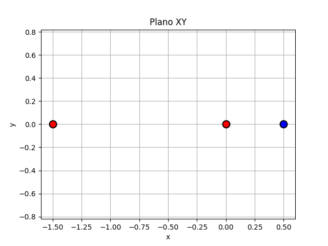

En este laboratorio se analiza el comportamiento del campo eléctrico generado por tres cargas puntuales dispuestas a lo largo del eje x. La configuración estudiada consiste en dos cargas positivas ubicadas en los puntos (0, 0) y (1.5, 0), con magnitudes de (+30×10^−6) y (+20×10^−6 ) respectivamente, y una carga negativa de (−40×10^−6 ) ubicada en (0.5, 0).
Para analizar el comportamiento del campo eléctrico generado por la configuración de cargas, calculamos numéricamente los valores para tres puntos del plano xy el campo eléctrico E(x,y):
De los resultados obtenidos, se observa que en el punto E1 el campo eléctrico es cercano a cero, debido a que los campos generados por las dos cargas positivas se cancelan parcialmente. En E2, el componente en y es prácticamente nulo, mientras que el componente en x presenta un valor significativo, lo que refleja la interacción predominante con la carga negativa. Un comportamiento similar se aprecia en E3, donde el componente en x es elevado y el de y cercano a cero, evidenciando la dirección predominante del campo en ese punto.
Para cambiar el lugar de E1, E2 y E3 pueden editarlos manualmente en main.py, línea 36.


En la proyección del campo total sobre el eje x, se evidencia cómo dicha superposición de las contribuciones individuales resulta en el campo eléctrico total. Graficamos además puntos de equilibrio, permitiendo interpretarlos físicamente como regiones donde una carga de prueba no experimentaría fuerza neta. Debemos destacar que solamente un punto de equilibrio está siendo representado, ya que en el infinito podemos encontrar otro, de la rama negativa de q3 convirtiéndose en positiva (al ser la carga neta del sistema positiva) y encontrando allí otro punto donde el campo se anula, que no ha podido ser representado por dimensionalidad de la representación gráfica. Las discontinuidades cercanas a las posiciones de las cargas representan el carácter singular del campo eléctrico en dichos puntos.

Componente x: -1076.193 N/C
Componente y: -16696.328 N/C
Módulo total: 16730.976 N/C
Dirección (desde el eje x): -93.69°
El cálculo del campo eléctrico indica que una carga positiva ubicada en (2,2) sería empujada principalmente hacia abajo y ligeramente a la izquierda. La carga negativa cercana domina la dirección del campo en ese punto y el campo es grande por la cercanía de las cargas entre ellas. Esto puede evidenciarse en el gráfico de lineas de campo.

Las líneas de campo evidencian el sentido en el que fluyen las fuerzas que componen los campos eléctricos de cada carga y así la dirección del campo total.

Las líneas equipotenciales muestran los puntos del espacio que tienen el mismo potencial eléctrico. Si se coloca una carga de prueba en cualquier punto sobre una línea equipotencial, no realizará trabajo eléctrico al moverse por esa línea, ya que su energía potencial no cambia. Estas líneas siempre son perpendiculares a las líneas del campo eléctrico, lo cual podemos observar si lo comparamos con el gráfico anterior:

Por otro lado, el gráfico del potencial eléctrico muestra una transición continua, como se espera, con un mínimo definido por el signo de las cargas q1 y q2. Vemos en particular que en el punto de equilibrio del campo eléctrico se haya el mínimo de potencial eléctrico, relación que evidencia la fórmula E= −∇V, donde se establece que el campo eléctrico apunta en la dirección donde el potencial disminuye más rápidamente, y en este caso al ser 0 el campo, el cambio de V (su pendiente) será 0 y por lo tanto habrá un mínimo en dicho punto.